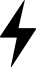
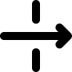
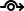
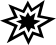
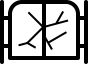

"Energy" is CCBY Caitlin George (https://thenounproject.com/cgeorge1028)

"through" is CCBY luca fruzza (https://thenounproject.com/lucafruzza)

"Detour Around" is CCBY Ben Davis (https://thenounproject.com/smashicons)

"explosion" is CCBY Louis Hesse (https://thenounproject.com/louishesse)

is based on "gate", CCBY Deemak Dasina (https://thenounproject.com/deemakdaksina)